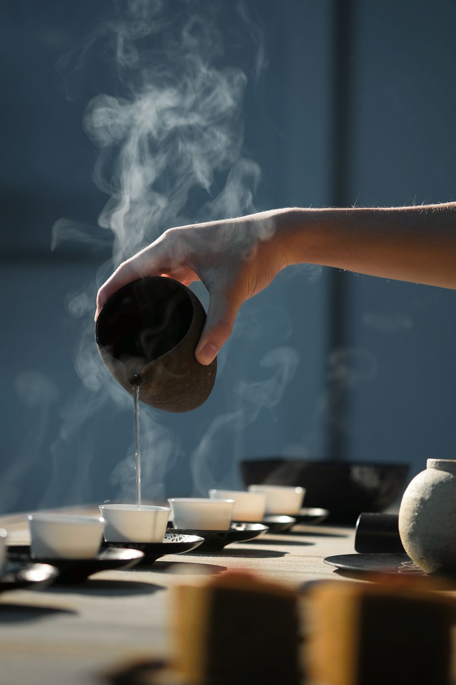

- Origins
- Processing
- Types
- Preparing
Preparing

To brew the perfect cup of black tea, ask your tea vendor for brewing instructions specific to the tea you purchased, because many black teas have different ideal brewing temperatures and steeping times. Here are a few general black tea brewing tips to keep in mind:
Use fresh, pure, cold filtered water. Spring water is the best.
Black teas are typically brewed for longer periods of time and in hotter temperatures than green teas. Generally, this is somewhere between 200 and 212 degrees for 3 to 5 minutes.
If you don’t have an electric kettle with temperature control, just remember that at sea level water simmers at 190 degrees and boils at 212 degrees. The boiling temperature drops about a degree for every 100 feet in altitude increase. So, generally, somewhere just off a rolling boil should be perfect for brewing your black tea.
If your black tea came with specific recommendations for brewing, use those. But using about 2 grams of loose leaf tea per 8 oz. cup of water is a safe bet.
Cover your tea while it steeps to keep all the heat in the steeping vessel.
Don’t oversteep your tea! The longer your tea steeps, the more quickly it will release any bitterness and astringency. Taste your tea after the recommended steeping time and then decide if you’d like it to steep a little longer.
Most high-quality loose leaf black teas can be steeped multiple times.
Most black teas are strong enough to stand up to milk and sugar. But to truly enjoy the subtle flavor differences between the many varieties of black tea, try sipping them plain with no additives.